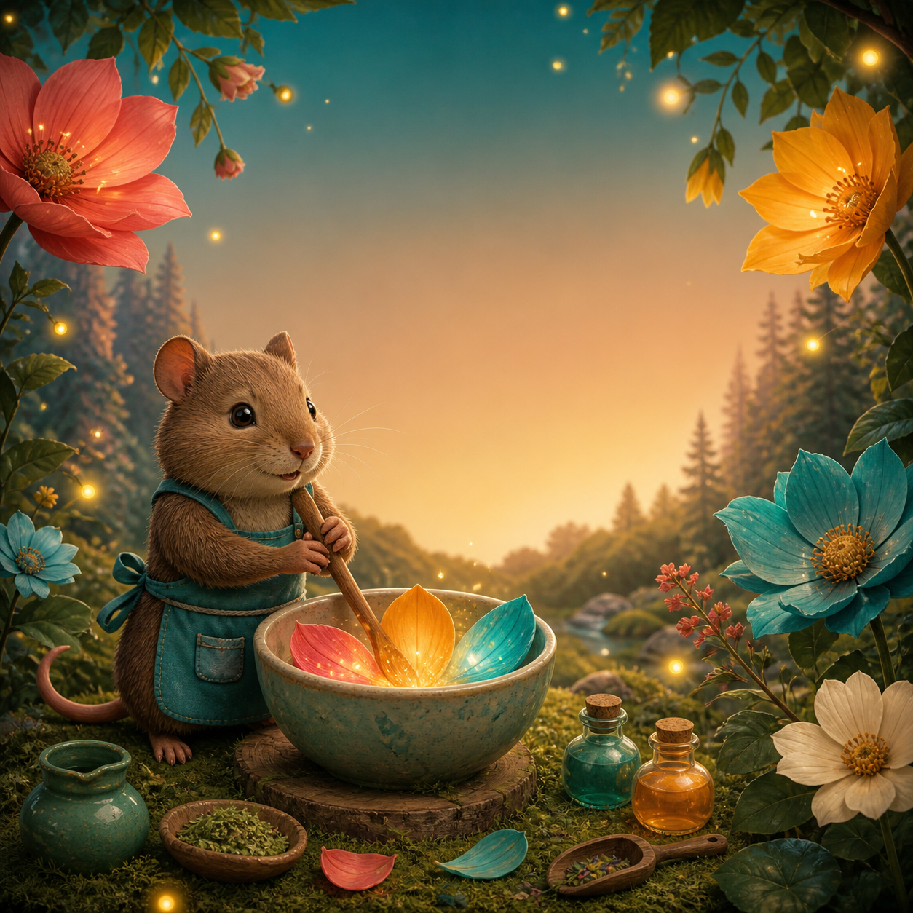
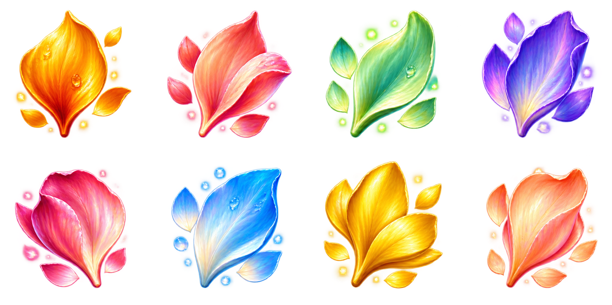
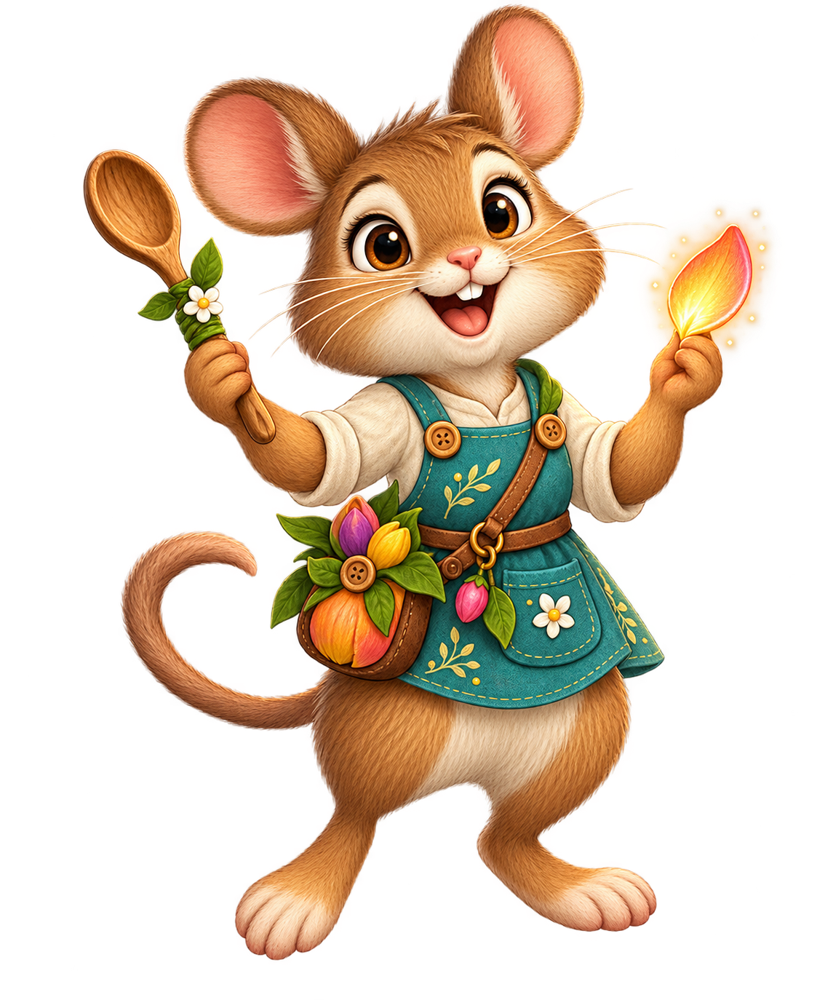

Choose the three petals that make each keeper's flower recipe.
0 / 3 recipes mixedWarming the mixing table…

Choose the three petals that make each keeper's flower recipe.
0 / 3 recipes mixed
Choose three petals to begin.

RECIPE COMPLETE
Returning to Recipes clears the current basket. Recipes already mixed in this visit stay complete.
Read each meadow note and mix the exact three petals it requests.
Three authored recipes form a short, calm set-selection session. Progress and your best pick count stay in this browser.